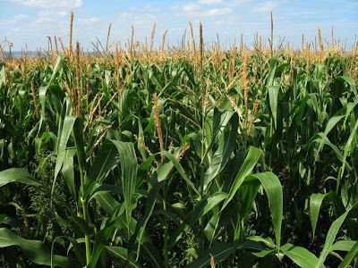
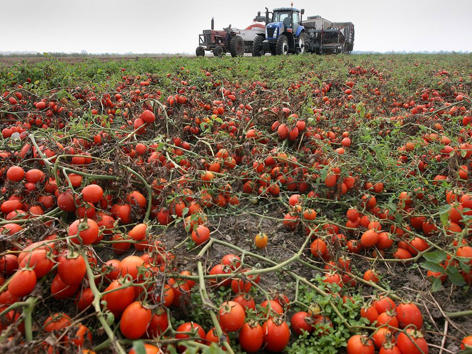

Portfólio de Colheita Ver todos

12 solicitações
Milho da GeoAgro: lote selecionado com alta produtividade e monitoramento de pragas via satélite.

5 solicitações
Tomate cereja orgânico: colheita prevista para próxima semana. Lote disponível para negociação imediata.
atu
Como está a plantação agora:
Saúde das Plantas
Muito Boa
Tudo em ordemSede da Planta
Baixa
Bem regada
Recomendações para hoje
Hora de Regar
A terra está a começar a secar. Ligue a rega apenas ao final da tarde (após as 17h) para não gastar tanta água.
Adubação
As plantas estão no ponto certo para receber alimento. É um bom momento para aplicar o reforço.
Aviso de Vento
O vento está a soprar com força. Não aplique tratamentos agora, senão o vento leva o produto para longe.
Posso trabalhar agora?
Aplicar tratamentos
NÃO
Trabalhar a terra
SIM
Fazer colheita
SIM